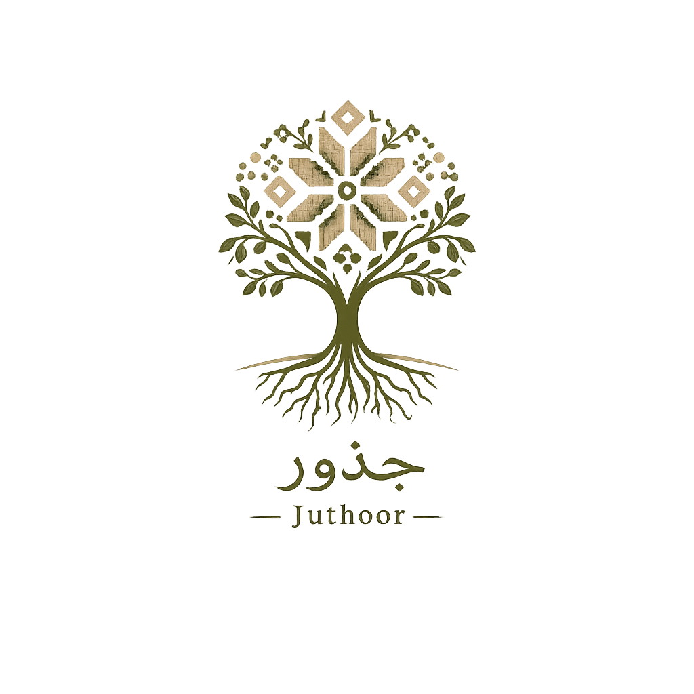
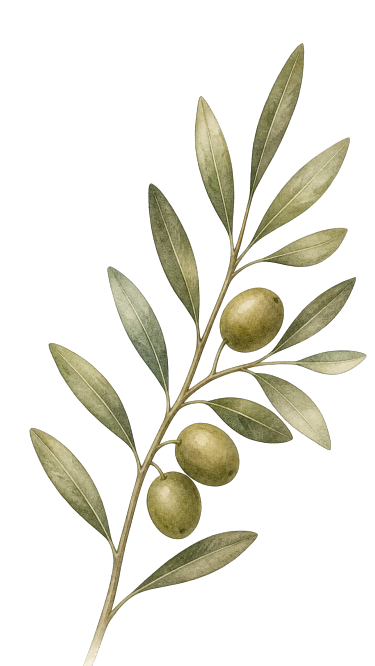
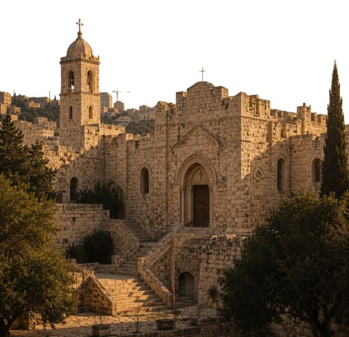

من فكرة، إلى أثر.

وُلدت جذور من شغف عميق بالتراث الفلسطيني، وبحثٍ للحرفة التي تنتقل من جيل إلى جيل. نؤمن بأن كل قطعة تحمل حكاية، وتحمل في تفاصيلها روح الأرض، ودفء الأيادي، وذاكرة المكان.
نسعى في جذور إلى إحياء الفن الفلسطيني الأصيل بروح معاصرة، من خلال منتجات تمزج بين التراث والجمال والوظيفة، لنصنع قطعاً ترافقكم في حياتكم، وتربطكم بهويتكم أينما كنتم.
كل ما نقدمه هو احتفاء بالحرفة الفلسطينية، ودعم للحرفيين المحليين، وإسهام في الحفاظ على إرث ثقافي غني، ونقله إلى المستقبل بكل فخر واعتزاز.
